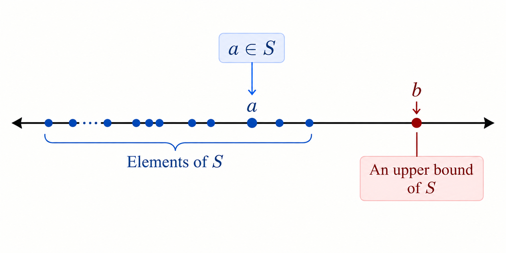
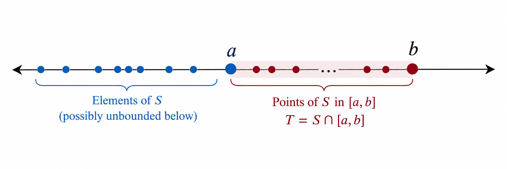
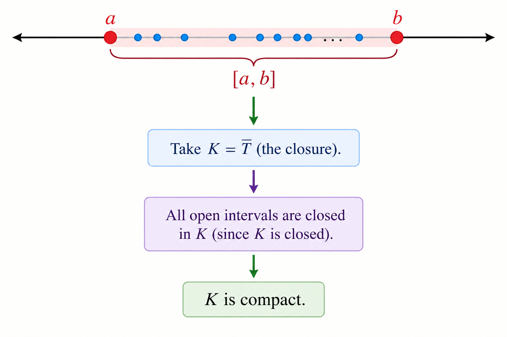
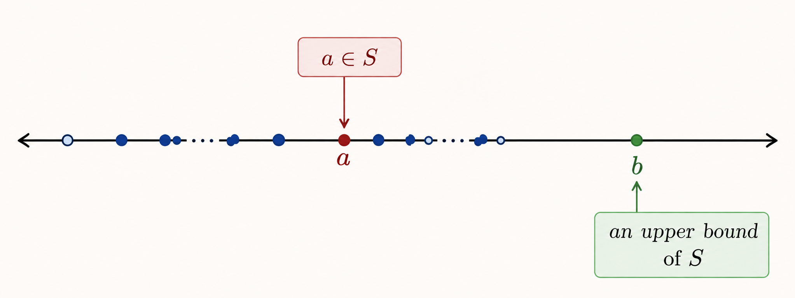

The three equivalent forms of completeness
The Axiom of Completeness, the Nested Interval Property, and the Heine–Borel Theorem all point to the same fundamental idea: the set of real numbers is complete. In other words, there are no gaps in the real number line. These three statements are equivalent in the sense that, if we take any one of them as an axiom, we can prove the other two from it. This is the idea we will explore here.
A set \(A \subseteq \mathbb{R}\) is bounded above if there exists a number \(b \in \mathbb{R}\) such that
The number \(b\) is called an upper bound for \(A\).
A set \(A \subseteq \mathbb{R}\) is bounded below if there exists a number \(l \in \mathbb{R}\) such that
The number \(l\) is called a lower bound for \(A\).
Let \(A \subseteq \mathbb{R}\). The least upper bound, or supremum, of \(A\) is a real number \(s \in \mathbb{R}\), denoted by \(\text{sup}\,A\) satisfying two conditions:
\(s\) is an upper bound for \(A\)
If \(b\) is any upper bound for \(A\), then \(s \leq b\).
The greatest lower bound, or infimum, is defined similarly and denoted by \(\inf A\).
A set \(K \subseteq \mathbb{R}\) is compact if every open cover of \(K\) contains a finite subcover.
An open cover of \(K\) is a collection of open sets \(\{U_\alpha\}\) such that every point of \(K\) lies in at least one of the sets. Equivalently, the union of all the sets contains \(K\):
A finite subcover means that we can choose only finitely many sets from the original cover, and these chosen sets still contain every point of \(K\). Thus, for some finite collection,
The set \((0,1)\) is not compact.
Consider the collection of open intervals
Every point of \((0,1)\) belongs to at least one of these intervals, so
Thus \(\{U_n\}_{n=1}^{\infty}\) is an open cover of \((0,1)\). By definition, if \((0,1)\) were compact, there would have to be a finite collection of the \(U_n\)'s whose union still covers \((0,1)\).

Now suppose that finitely many intervals from this cover were enough to cover \((0,1)\). Then, for some finite indices \(\alpha_1,\ldots,\alpha_m\),
Let \(N=\max\{\alpha_1,\ldots,\alpha_m\}\). Then every selected index is at most \(N\), so each selected interval lies to the right of \(\frac{1}{N+1}\). Hence
Thus the finite selection misses every point in \(\left(0,\frac{1}{N+1}\right]\), for example \(\frac{1}{2(N+1)}\). Hence no finite collection of the \(U_n\)'s can cover \((0,1)\).

Therefore this open cover has no finite subcover. We have found an open cover of \((0,1)\) for which every finite selection leaves some points uncovered.
The reverse direction can also be obtained from the Heine–Borel Theorem. Assume the Heine–Borel property as our starting point: every closed and bounded subset of \(\mathbb R\) is compact. We now show that this already implies the Axiom of Completeness.
The strategy is to cut off the irrelevant unbounded part of a set, take the closure of the remaining piece, use compactness to obtain a maximum, and then show that this maximum is precisely the least upper bound.
Let \(S\subseteq\mathbb R\) be nonempty and bounded above. Choose \(a\in S\) and choose an upper bound \(b\in\mathbb R\) of \(S\).
We cannot simply conclude that \(S\subseteq[a,b]\), since \(S\) may extend indefinitely to the left. For example, \(S=(-\infty,0)\cup[1,2]\) is bounded above, but not bounded below.

Define
Then \(T\neq\varnothing\), since \(a\in S\) and \(a\in[a,b]\), and \(T\subseteq[a,b]\).
Moreover, \(S\) and \(T\) have exactly the same upper
bounds. Indeed, an upper bound of \(S\) is automatically an
upper bound of \(T\). Conversely, if \(u\) is an upper
bound of \(T\), then \(a\in T\) gives \(a\le u\). For
any \(s\in S\), either \(s
Therefore \(S\) and \(T\) have the same upper bounds.

Let
Since \(T\subseteq[a,b]\) and \([a,b]\) is closed, \(\overline T\subseteq[a,b]\). Thus \(K\) is closed and bounded. By the Heine–Borel property, \(K\) is compact.

Every nonempty compact subset of \(\mathbb R\) has a maximum. Indeed, if a compact set \(K\) had no maximum, then the family \(\{(-\infty,x):x\in K\}\) would be an open cover of \(K\). A finite subcover would have a largest endpoint \(x_0\in K\), but \(x_0\notin(-\infty,x_0)\), a contradiction. Thus a nonempty compact set has a maximum.
Since \(T\neq\varnothing\), its closure \(K\) is nonempty; hence there exists
Since \(T\subseteq K\) and \(M=\max K\), we have \(t\le M\) for every \(t\in T\). Thus \(M\) is an upper bound of \(T\).
Now let \(u
Then there exists \(t\in T\) with
Hence
Therefore \(u\) is not an upper bound of \(T\). No number
smaller than \(M\) is an upper bound, so
\(M=\sup T\).
The sets \(S\) and \(T\) have exactly the same upper bounds.
Consequently,
Thus every nonempty subset of \(\mathbb R\) that is bounded
above has a least upper bound in \(\mathbb R\). Therefore the
Heine–Borel property implies the Axiom of Completeness.
Every non-empty subset \(S \subseteq \mathbb{R}\) that is
bounded above has a least upper bound
(supremum) in \(\mathbb{R}\).
That is, if \(S \neq \varnothing\) and there exists
\(M \in \mathbb{R}\) such that \(s \leq M\) for all
\(s \in S\), then there exists a number
\(L \in \mathbb{R}\) such that
\(s \leq L\) for all \(s \in S\)
\(\text{(so }L\text{ is an upper bound)}\), and
If \(U\) is any upper bound of \(S\), then
\(L \leq U\)
\(\text{(so }L\text{ is the least upper bound)}\).
Let \(I_n=[a_n,b_n]\) be a sequence of non-empty closed bounded intervals such that
\(I_{n+1}\subseteq I_n\) for every \(n\in\mathbb{N}\). Then
Since \(I_{n+1}\subseteq I_n\), we have
\[
a_n\le a_{n+1}\le b_{n+1}\le b_n
\qquad(n\in\mathbb N).
\]
Hence the left endpoints form a non-empty set bounded above by \(b_1\).
By the Axiom of Completeness, let
Because \(\alpha\) is an upper bound of the set of left endpoints,
\(a_n\le\alpha\) for every \(n\). Now fix \(n\). We claim that
\(b_n\) is also an upper bound of \(\{a_m:m\in\mathbb N\}\).
If \(m\le n\), then \(a_m\le a_n\le b_n\). If \(m\ge n\), then
\(I_m\subseteq I_n\), so \(a_m\in I_n\) and again \(a_m\le b_n\).
Thus \(b_n\) is an upper bound of the entire set of left endpoints. Since
\(\alpha\) is its least upper bound, \(\alpha\le b_n\).
Therefore \(\alpha\in[a_n,b_n]=I_n\) for every \(n\). Thus the same
point belongs to every interval:
Hence
A set \(K \subseteq \mathbb{R}\) is compact if and only if
it is closed and
bounded.
First suppose that \(K\) is compact.
The intervals \(U_n=(-n,n)\), \(n\in\mathbb N\), form an open cover of \(K\).
By compactness, finitely many of them cover \(K\). If \(N\) is the largest index
in the finite selection, then \(K\subseteq U_N=(-N,N)\). Hence \(K\) is bounded.
To see that \(K\) is closed, suppose for contradiction that
\(x\in\overline K\setminus K\). For each \(n\in\mathbb N\), let
The sets \(V_n\) form an open cover of \(K\): every \(y\in K\) satisfies
\(|y-x|>0\), so \(y\in V_n\) for sufficiently large \(n\). A finite subcover
would be contained in some \(V_N\), but \(V_N\) misses
\((x-\tfrac1N,x+\tfrac1N)\). Since \(x\in\overline K\), this neighbourhood
meets \(K\), a contradiction. Thus \(K\) is closed.
Conversely, suppose that \(K\) is closed and bounded.
Let \(\{U_\alpha\}\) be an open cover of \(K\). Choose \(a<b\) with
\(K\subseteq[a,b]\), and define
The set \(S\) is non-empty, because \(K\cap[a,a]\) is either empty or a single
point. Also \(S\subseteq[a,b]\), so it is bounded above. Let \(c=\sup S\).
We claim that \(c=b\). Suppose \(c<b\). If \(c\notin K\), closedness gives
\(\delta>0\) such that \((c-\delta,c+\delta)\cap K=\varnothing\), with
\(c+\delta\le b\). Choose \(s\in S\) with \(c-\delta<s\le c\).
The finite cover of \(K\cap[a,s]\) then already covers
\(K\cap[a,c+\delta]\), so \(c+\delta\in S\), contradicting that \(c\)
is an upper bound of \(S\).
If \(c\in K\), choose \(U_\alpha\) containing \(c\). Since \(U_\alpha\) is
open, choose \(\delta>0\) with
\((c-\delta,c+\delta)\subseteq U_\alpha\) and \(c+\delta\le b\).
Again choose \(s\in S\) with \(c-\delta<s\le c\). A finite cover of
\(K\cap[a,s]\), together with \(U_\alpha\), covers
\(K\cap[a,c+\delta]\). Hence \(c+\delta\in S\), the same contradiction.
Therefore \(c=b\).
Finally, \(b\in S\). If \(b\notin K\), closedness gives a neighbourhood of \(b\)
disjoint from \(K\), and an element \(s\in S\) sufficiently close to \(b\)
shows that a finite cover of \(K\cap[a,s]\) already covers all of \(K\).
If \(b\in K\), choose an open set \(U_\alpha\) containing \(b\); a sufficiently
small neighbourhood of \(b\) lies in \(U_\alpha\), and together with a finite cover
up to some \(s\in S\) close to \(b\), it covers all of \(K\).
Thus \(b\in S\), so \(K=K\cap[a,b]\) has a finite subcover. Therefore \(K\)
is compact. Combining the two directions,
\(K\subseteq\mathbb R\) is compact if and only if it is closed and bounded.
So far, we have used the Axiom of Completeness to prove the
Nested Interval Property and the Heine–Borel Theorem. The remarkable fact is
that the implication can also be reversed. If we take the Nested Interval
Property as an axiom, then we can recover the Axiom of Completeness.
The construction below is the key idea: repeatedly trap the boundary between the
elements of a bounded set and its upper bounds inside smaller and smaller nested
intervals.

Let \(S\subseteq\mathbb R\) be nonempty and bounded above. Choose
\(A_1\in S\), and choose an upper bound \(B_1\) of \(S\) such that
\(A_1
Suppose \(A_n\in S\) and \(B_n\) is an upper bound of \(S\).
Consider their midpoint
If \(M_n\) is an upper bound of \(S\), set
\(A_{n+1}=A_n\) and \(B_{n+1}=M_n\).
If \(M_n\) is not an upper bound, choose
\(A_{n+1}\in S\) with \(A_{n+1}>M_n\), and set
\(B_{n+1}=B_n\).
In either case,
\[
[A_{n+1},B_{n+1}]\subseteq[A_n,B_n],
\qquad
B_{n+1}-A_{n+1}\le\frac{B_n-A_n}{2}.
\]
Iterating this construction gives
\[
[A_1,B_1]\supseteq[A_2,B_2]\supseteq[A_3,B_3]\supseteq\cdots,
\]
where \(A_n\in S\), \(B_n\) is an upper bound of \(S\), and
\[
0\le B_n-A_n
\le\frac{B_1-A_1}{2^{n-1}}
\longrightarrow0.
\]
By the Nested Interval Property,
\[
\bigcap_{n=1}^{\infty}[A_n,B_n]\ne\varnothing.
\]
Choose
\[
x\in\bigcap_{n=1}^{\infty}[A_n,B_n].
\]
Then \(A_n\le x\le B_n\) for every \(n\).
Suppose, for contradiction, that \(x\) is not an upper bound of \(S\).
Then there exists \(s\in S\) with \(s>x\). Since
\(B_n-A_n\to0\), choose \(n\) such that
\[
B_n-A_n
Suppose that \(u
Every nonempty subset \(S\subseteq\mathbb R\) that is bounded above has
a least upper bound \(x\in\mathbb R\). Thus